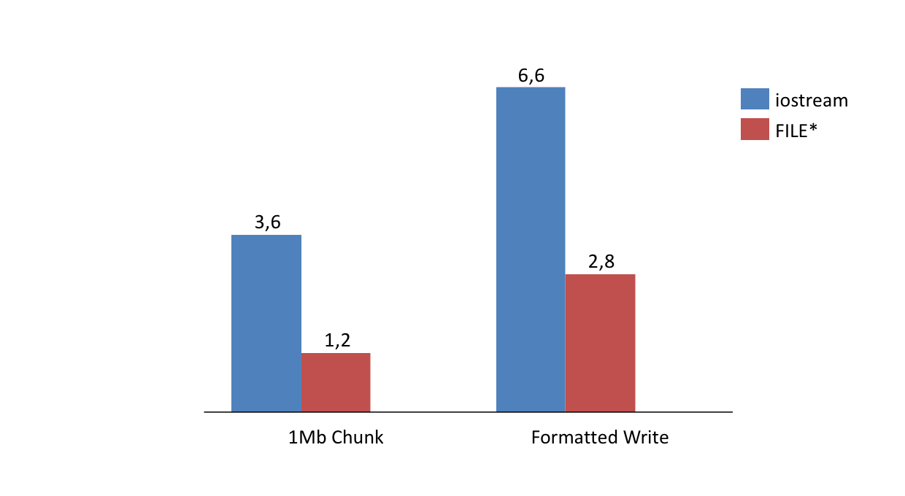
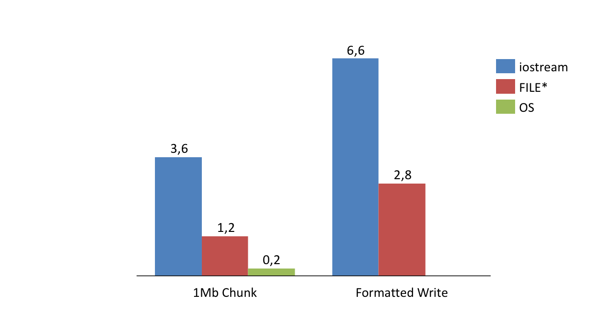
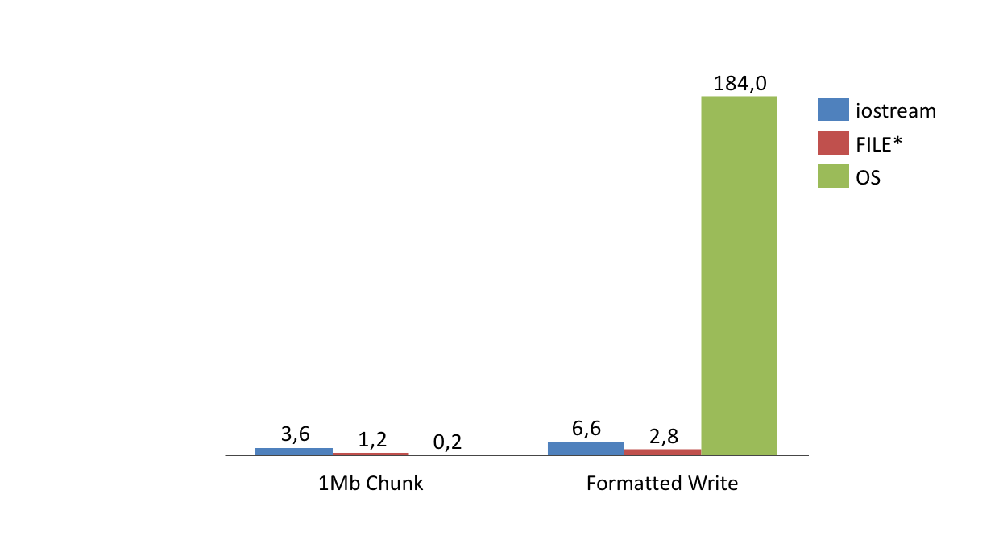

class: center, middle # std::cout is out ## *Why iostreams must go* --- class: center, middle # I/O in the standard --- # C-style I/O std::FILE* fp = std::fopen(strPath, "wb"); ??? - API does not exploit type safety: fopen write-only and then fread is possible. - Is fp binary or text, narrow or wide? - Even worse: All open files access global locale state -- if(!fp) { /* error handling, check errno for error message */ } ??? - errno error reporting loses (platform-dependent) information. - C++ has better tools for this. -- unsigned int n = ...; std::string str = ...; if(std::fprintf(fp, "Dec: %d Hex: %x String: %s\n", n, n, str.c_str())<0) { // error handling } ??? - fprintf calls and friends are not type-safe either. Use unsafe variadic functions, compilers try to catch errors. --- # C++ Streams -- std::basic_ofstream<char> ofs(strPath, std::ios_base::binary | std::ios_base::out); ??? - *Good:* Improves type safety. ostream vs istream, narrow or wide. - Still can't distinguish binary from text, or e.g. seekable files. - Private locale -- if(!ofs) { /*error handling*/ } ??? - Error handling loses all specific information -- unsigned int n = ...; std::string str = ...; ofs << "Dec: " << n << " Hex: " << std::hex << n << " String: " << str << std::endl; ??? - Formatting is safe, but not perfect. This line has two problems. Who spots them? --- # C++ Streams std::basic_ofstream<char> ofs(strPath, std::ios_base::binary | std::ios_base::out); if(!ofs) { /*error handling*/ } unsigned int n = ...; std::string str = ...; ofs << "Dec: " << n << " Hex: " << std::hex << n << std::unsetf(std::ios_base::hex) << " String: " << str << "\n"; ??? - The formatters are stateful. std::hex sets a formatting flag that you need to unset. All future numbers output has hex otherwise. - std::endl does not only print EOL, also flushes. Kills performance. -- if(ofs.fail() || ofs.bad()) { // error handling } ??? - The worst problem: error handling. What is the semantics of fail() and bad()? recoverable / not-recoverable? - That is a stupid distinction because the API cannot make this. - *(Encountering eof while reading is certainly "recoverable", not being able to seek not so much)* - If my algorithm requires a seekable stream, yet seek "only" sets failbit, that is a logic error in my program and not recoverable. --- # So far, so bad -- _How do you create a temporary file on Windows?_ ??? - By themselves IO APIs aren't very good. - On top, they aren't powerful enough to support frequent use-cases -- ```cpp HANDLE h = CreateFile( szFile, GENERIC_READ|GENERIC_WRITE, * FILE_SHARE_READ, * nullptr, // security descriptor, handle inheritance CREATE_NEW, * FILE_ATTRIBUTE_TEMPORARY, // attributes incl e.g. encryption, hidden flag * nullptr // template file ); ``` ??? - Highlighted is everything std APIs cannot express - similar options on POSIX: - follow symlinks in szPath, - block until file is available - exclusive or shared lock etc - fopen/iostreams not flexible enough. Strict subset of platform-specific possibilities. - Creation from native handle is not specified (but exists on POSIX and Windows). --- # What would we like to have? -- ## Better Files - Platform-independent files, creatable from native handles - Use type-system to document file capabilities - With sensible error handling -- ## Better Formatting - Stateless formatting, extensible, usable for different types <br/> (Write to `std::string`, `std::vector<char>`, files, `IStream*`!) - Distinction between binary and text output - Automatic encoding conversion UTF8 - UTF16 --- class: center, middle # Better Files --- # Type Safety -- struct unmanaged_filebase_t { // ~unmanaged_filebase_t does not close file, use for stdin etc std::FILE* m_file; }; struct filebase_t : unmanaged_filebase_t { ~filebase_t(); // closes file }; ??? - Uses FILE* internally, didn't want to reimplement buffering - Use type system -- template<typename base> struct readfile_impl_t : base { /* read operations */ }; template<typename base> struct appendfile_impl_t : base { /* write operations */ }; --- # Type Safety // Append-only, non-owned file, e.g. for writing to stdout using unmanaged_appendfile = appendfile_impl_t<unmanaged_filebase_t>; // Append-only, owned file struct appendfile : appendfile_impl_t<filebase_t> { /* ... */ }; struct readwritefile = readfile_impl_t<appendfile_impl_t<filebase_t>> { // Inherits read, write operations on single file handle }; ??? - Now we can play mix and match with the four building blocks --- # File Creation: POSIX ??? - Opening/creating files is platform-specific. - Constructors implemented differently for each OS - Create FILE* from OS handle -- ``` appendfile(filechar const* szFile, create_always_tag) throw(std::ios_base::failure) { int fd = open(szFile, O_WRONLY | O_APPEND | O_TRUNC | ..., ...); // may fail if(-1!=fd) throw std::ios_base::failure(""); // File handle conversion assumed not to fail std::FILE* file = VERIFY(fdopen(fd, "a")); ... } ``` ??? - VERIFY is a think-cell error handling macro, left in to document that we assume the conversion not to fail --- # File Creation: Windows ``` appendfile(filechar const* szFile, create_always_tag) throw(std::ios_base::failure) { HANDLE hfile = CreateFile(...); // may fail, error handling omitted if(INVALID_HANDLE_VALUE!=hfile) throw std::ios_base::failure(""); // File handle conversion assumed not to fail int fd = _open_osfhandle(reinterpret_cast<intptr_t>(hfile), _O_WRONLY); _ASSERT(-1 != fd); std::FILE* file = VERIFY(_fdopen(fd, "wb")) ... } ``` --- # Error handling ??? - Uses exceptions, really useful for program flow in i/o code -- ``` template<typename base> struct readfile_impl_t : base { // throws in case of error only: std::size_t try_read(void* pv, std::size_t cb) throw(std::ios_base::failure); // throws in case of error or if less than cb bytes read: void read(void* pv, std::size_t cb) throw(std::ios_base::failure); template<typename T> T read() throw(std::ios_base::failure); }; ``` ??? - Different operations have different error cases - Also: All reads (and writes) are binary --- # Error handling *Reading in chunks e.g. for parsing:* ``` auto cbRead = file.try_read(achBuffer, sizeof(achBuffer)); // may return < sizeof(achBuffer) ``` *Reading structured data* ``` int nLength = file.read<int>(); // must read sizeof(int) // Now read nLength characters ``` --- class: center, middle # Better Formatting --- # Better Formatting // Stateless formatting, into arbitrary types, with encoding conversion: std::basic_string<char16_t> str; str << "Dec: " << as_dec(1000) << " Hex: " << as_hex(1000); -- // We need that too (unfortunately): std::vector<char, some_custom_allocator> vecch; vecch << "Dec: " << as_dec(1000) << " Hex: " << as_hex(1000); -- // And this of course: appendfile file(...); make_typed_stream<char16_t>(file) // write UTF16 to file << "Dec: " << as_dec(1000) << " Hex: " << as_hex(1000); -- // Let's get crazy IStream* iStream = ...; make_typed_stream<char>(iStream) // write UTF8 to iStream << "Dec: " << as_dec(1000) << " Hex: " << as_hex(1000); -- _10 lines of code needed to adapt `IStream*` to formatting library._ --- # Make Everything Streamable -- How to pipe characters into anything? -- ``` template<typename Sink> typename std::enable_if< * is_streamable<Sink>::value, Sink& >::type operator<<( Sink& os, stream_traits<Sink>::value_type ch) { * stream_traits<Sink>::append(os, ch); return os; } ``` -- ## _We need traits of course!_ --- # Type Traits the Classic Way -- template<typename T> struct stream_traits { // fall-back implementation using value_type = void; // with non-sensical value_type }; template<typename Char> struct stream_traits<std::vector<Char>> { // specialization for std::vector using value_type = Char; // provide needed typedefs and methods (omitted) }; -- template<typename T> // Define is_streamable<T> by looking up stream_traits<T> using is_streamable = std::integral_constant< bool, * !std::is_same<void, typename stream_traits<T>::value_type>::value >; ??? - Why is that not the best way? - Does not support traits for inherited types - All traits must be in global namespace --- # Type Traits using Function Lookup struct not_streamable {}; not_streamable tc_stream_traits(...); // Fallback implemenation, always least preferred overload template<typename Char>; struct vector_stream_traits { using value_type = Char; // Again, required trait methods are omitted }; template<typename Char> // Overload tc_stream_traits for std::vector<Char> vector_stream_traits<Char> tc_stream_traits(std::vector<Char>&); -- template<typename T> using stream_traits = // Lookup return type of tc_stream_traits(T&) (with ADL and overloads!) decltype( tc_stream_traits( std::declval<std::decay_t<T>&>() ) ); -- template<typename T> // Again, is_streamable<T> is defined via stream_traits<T> using is_streamable = std::integral_constant< bool, * !std::is_same<not_streamable, stream_traits<T>>::value >; --- # A Complete Traits Implementation struct istream_stream_traits { using value_type = unsigned char; // binary device, like a file // Write a character static void append(ISequentialStream* iStream, unsigned char ch) noexcept { HRERR(iStream->Write(std::addressof(ch), 1, nullptr)); } // Write a range of characters static void append_range(ISequentialStream* iStream, Rng const& rng) noexcept { HRERR(iStream->Write(boost::begin(rng), size(rng), nullptr)); } // Flush device static void flush(ISequentialStream* iStream) noexcept {} }; istream_stream_traits tc_stream_traits(ISequentialStream*); _`IStream*` is convertible to `ISequentialStream*`_ --- # Converting Encodings ``` template<typename Sink, typename Rng> typename std::enable_if< * is_streamable<Sink>::value && is_char_range<Rng>::value, Sink& >::type operator<<( Sink& os, Rng&& rng) { * ConvertEnc<char_t of Rng, char_t of Sink>::Append(os, std::forward<Rng>(rng)); return os; } ``` -- - `ConvertEnc<Char, Char>::Append(os, rng)` simply calls `stream_traits<Sink>::append_range` - Specializations `ConvertEnc<char, char16_t>::Append` and `ConvertEnc<char16_t, char>::Append` convert encodings - Compile-time error when no suitable conversion exists, e.g. `ConvertEnc<char16_t, unsigned char>` --- # Converting Encodings _Convert UTF-8 to UTF-16:_ ``` std::basic_string<char16_t> str; str << "Hello World\n"; // UTF8 to UTF16 ``` -- _Files are binary and have no encoding. This does not compile:_ ``` appendfile file = ...; file << "Hello World\n"; ``` -- _Declare file to accept UTF-8 encoding:_ ``` appendfile file = ...; make_typed_stream<char>(file) << "Hello World\n"; ``` --- # Streaming Custom Types -- Overload global `operator<<` for custom types: ``` template<typename Sink> typename std::enable_if< * is_streamable<Sink>::value, Sink& >::type operator<<( Sink& os,boost::uuids::uuid const& uuid) { * os << boost::uuids::to_string(uuid); return os; } ``` --- # Formatting Numbers ``` template<T> struct as_dec_impl { T m_f; ... // Decimal separator, precision, padding etc template<typename Sink> friend typename std::enable_if< * is_streamable<Sink>::value, Sink& >::type operator<<( Sink& os, as_dec_impl<T,Char> const& n) { * // Convert m_f to characters and stream those to os return os; } }; ``` -- _Formatters we have:_ - `as_dec(FloatingPointType f, CharType chDecimal)` - `as_padded_lc_hex(IntegralType const& t)` --- # Thank You! // Stateless formatting, into arbitrary types, with encoding conversion: std::basic_string<char16_t> str; str << "Dec: " << as_dec(1000) << " Hex: " << as_hex(1000); // We need that too (unfortunately): std::vector<char, some_custom_allocator> vecch; vecch << "Dec: " << as_dec(1000) << " Hex: " << as_hex(1000); // And this of course: appendfile file(...); make_typed_stream<char16_t>(file) // write UTF16 to file << "Dec: " << as_dec(1000) << " Hex: " << as_hex(1000); // Let's get crazy IStream* iStream = ...; make_typed_stream<char>(iStream) // write UTF8 to iStream << "Dec: " << as_dec(1000) << " Hex: " << as_hex(1000); --- class: center, middle # Slides & Benchmark ## https://github.com/stheophil/iostreams_talk ## https://github.com/CppUGBerlin/Talks --- class: center, middle # _"iostreams are super slow!"_ -- ## _... but are they?_ --- class: center, middle  **[Times in ms]** ??? - Small benchmark: Writing 1 Mb chunks or smaller chunk using formatter - with ostream or with FILE* - yes, ostream is slower than FILE* in this comparison, but as discussed, you also get some features from ostreams that FILE* does not have - BUT --- class: center, middle  **[Times in ms]** ??? - What if we write 1M chunks directly using OS function? - Performance diff between iostream and FILE* becomes almost irrelevant. - If you know what you're doing, you can do much faster than std functions. - What if we're writing smaller formatted chunks using OS functions? --- class: center, middle  **[Times in ms]** ??? - Without userland buffer we can also do much worse than iostream/FILE --- # Remarks for Implementors 1. The number of `std::FILE*` that can be returned is limited on POSIX and Windows systems. - When using the Windows CRT, call `_setmaxstdio(8192)` to increase the limit to its maximum permitted value - On POSIX systems, call `setrlimit(RLIMIT_NOFILE, ...)` before you do any standard I/O call 2. According to the standard, when a `std::FILE*` is opened both for reading and writing, you must call `fseek` or `fflush` when you switch from reading to writing or vice versa. --- # Other File Implementations - **Chromium:** https://chromium.googlesource.com/chromium/src.git/+/master/base/files/file.h - **QT:** http://doc.qt.io/qt-5/qfile.html - **Juce:** http://www.juce.com/doc/classFile # Formatting - **cppformat:** printf-style formatting but type-safe http://cppformat.github.io/latest/reference.html ---